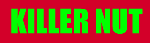
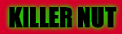
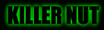

| |
Step one:
Make a nice background!
It's dead
easy, just fill in the background with any colour you like- Red, blue,
cyan, puce, or any other Teletubbies colours!! Except GREEN,
or BLACK!!!
|
|  |
Step two:
Do the text in green!
This is really easy too! Just
make a new layer with the text "Killer Nut" in bright green (0,255,0) in
the font Impact in 48pt, and stick in the centre of the image. |
| |
Step three:
Do a copy of the text in black!
Now you can see why I told you
not to fill the background in green or black, can't you? Anyway, this is
also very easy-peasy! Just duplicate the layer with the text in it, and
colour it black. |
| |
Step four:
Blur the green text!
Go to the layer with the green
verion of the text, and do a Gaussian Blur at level of 5.0
... Easy huh? |
| |
Step five:
Blur a copy of the blur!
Now duplicate that blurred layer,
and blur the copy in exactly the same way. I know what you're thinking,
this art business is too easy. Wait until you see the next bit! |
|  |
Step six:
Add it all together!
Make all the layers visible, and
make sure the black text is on the top- hey presto, instant "Killer Nut"
logo on a red background!!! Now all that remains is... |
|  |
Step seven:
Change the background to black!
Yes, just fill the layer with
the background colour with black! And there you are- a lovely "Killer Nut"
logo of your very own! Wow, isn't this art business easy? Well it is if
you've got a genius like me guiding you! |
 Believe
it or not, people have been asking us how we did our nice cool Killer
Nut logo. They have even been asking if... it's been ripped off from
a certain programme.
Believe
it or not, people have been asking us how we did our nice cool Killer
Nut logo. They have even been asking if... it's been ripped off from
a certain programme.